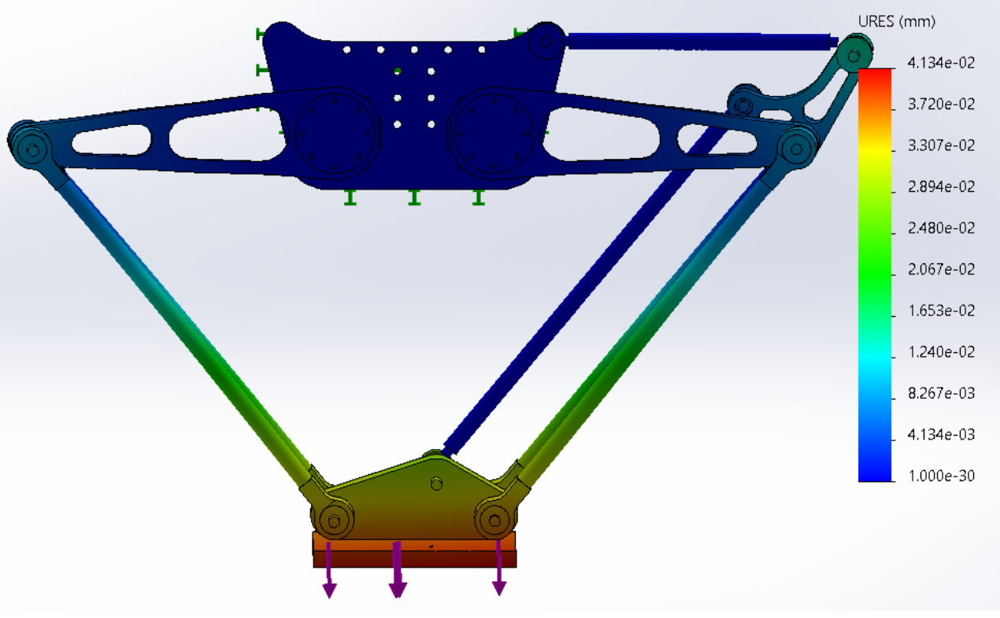

Pick-and-Place Robot
Design, manufacturing, and control of an aluminum, low-cost 2-axis pick-and-place parallel robot.
Overview
This is an undergraduate project I worked on during my studies at Monterrey Tech with a team of 6 mechatronics engineers. The main goal was to design and develop a lightweight and competitively priced robotic workstation for an industrial manufacturing cell, as existing solutions are generally lacking in both areas, as shown below. This required the use of a parallel pick-and-place robot with 2 Degrees of Freedom (DoF), a working area of 450 x 200 mm, and compatibility with industrial communication protocols.
Design
Mirroring arms were designed to achieve a workspace of, at least, 450 x 200 mm. The entire working area, however, is noted with construction lines in the image on the right. Hence, this total area was considered as the maximum limit for operator safety.
With this design, inverse kinematics were used to relate the end effector's position \((x, y)\) to the stepper motor-controlled arm angle \((\theta_1)\). Calculations for a single arm are shown below, as both arms follow similar kinematics.

From the Pythagorean Theorem:
\( A = \sqrt{x^2 + y^2} \)
Applying the Law of Cosines:
\( A^2 = l_1^2 + l_2^2 + 2l_1l_2 \cos(180^\circ - \theta_2)\)
Hence:
\(x^2 + y^2 = l_1^2 + l_2^2 + 2l_1l_2 \cos(\theta_2)\)
We create a new variable \(D\) to simplify:
\(D = \cos(\theta_2) = \frac{x^2 + y^2 - l_1^2 - l_2^2}{2l_1l_2}\)
Using the Pythagorean identity:
\(\cos^2(\theta) + \sin^2(\theta) = 1\)
\(\sin(\theta) = \sqrt{1 - \cos^2(\theta)}\)
Substituting \(D = \cos(\theta_2)\):
\(\sin(\theta) = \sqrt{1 - D^2}\)
Therefore:
\(\theta_2 = \tan^{-1}\left(\frac{\sqrt{1 - D^2}}{D}\right)\)
Now, solving for \( \theta_1 \):
\( \theta_1 = \alpha - \beta \)
Finding equations for \( \alpha \) and \( \beta \):
\( \alpha = \tan^{-1} \left( \frac{y}{x} \right) \)
\( \tan(\beta) = \frac{l_2 \sin(\theta_2)}{l_1 + l_2 \cos(\theta_2)} \)
\( \beta = \tan^{-1} \left( \frac{l_2 \sin(\theta_2)}{l_1 + l_2 \cos(\theta_2)} \right) \)
The final equation for \( \theta_1 \) is:
\( \theta_1 = \tan^{-1} \left( \frac{y}{x} \right) - \tan^{-1} \left( \frac{l_2 \sin(\theta_2)}{l_1 + l_2 \cos(\theta_2)} \right) \)
With this, Denavit-Hartenberg parameters were obtained to model each one of the arms from any given \((x, y)\) coordinate pair, making the control of the robot's end effector straightforward. The robot's parts were then Designed for Manufacturing (DFM), obtaining the following model.

Furthermore, a Finite Element Analysis (FEA) was performed to ensure the robot's structural integrity when carrying a 2 kg payload. The results showed that the aluminum parts could withstand the required loads without any issues.
Manufacturing
Fusion360 was utilized to generate the G-code for the CNC machine, which was used to manufacture most of the robot's parts. The rest were manufactured with manual lathes, manual mills, bench drills, band saws, and bend grinders. Below is a gallery of the robot's manufacturing process.

System Integration
After manufacturing, the robot was integrated with control components that allowed for automatic object detection, pick-and-place operations, home-setting, and emergency stops. These tasks were completed with a Siemens S7-1200 PLC, a Cognex In-Sight 7000 vision system, limit switches, and a pneumatic solenoid valve. Furthermore, a P controller was added to automatically adjust the robot's speed based on the distance to the target object. Finally, a Human Machine Interface (HMI) was developed to allow for manual control of the robot, as well as monitoring during regular operation. The HMI is shown below.
Results
The robot was able to perform pick-and-place operations with a 2 kg payload within the specified workspace, with a precision of 0.04 mm, and a speed of up to 120\(^\circ\) per second in terms of motor rotation. When comparing our robot to commercially available solutions, we found that our robot was more than 5 times cheaper than the closest competitor, while having a maximum range above the average. The final costs and results are shown below.
Gallery
Contributors
Alejandro Butterfield, Marlene Cobian, Christi Eguiza, Jesus Cervantes, and Ana Isabel Padilla